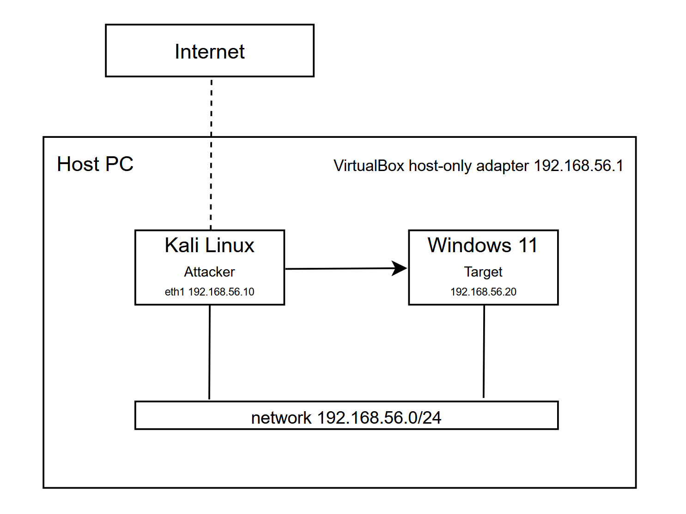

Alex Lundström
I am a fourth-year information technology student at Tampere University. I specialise in cybersecurity and communications engineering, but I have also studied software engineering. I have done several projects, some of which are presented below. I am currently writing my bachelor’s thesis, which covers secure data erasure on SSD drives.1 The thesis will be finished by the end of this year.1More about the thesis under Bachelor’s thesis.
Homelab
I have built a homelab made up of virtual machines. The project is written in English. The Scenarios are for learning the most common attack methods and how to read the signs of an attack from log data, among other things.
In Scenario 01 SMB brute-force I carry out a brute-force attack on the other virtual machine, where I guess an account’s weak password and read a file from it. The Scenario is finished and available on GitHub.
In Scenario 02 Persistence the attacker installs persistent access on the virtual machine that survives a reboot. The Scenario is still in progress and will be published later.
- Lab
- Kali Linux and Windows 11, VirtualBox
- Source
- cybersecurity-home-lab on GitHub
What I learnt
- Building the homelab
- I built the lab in VirtualBox on an isolated network with two different operating systems. I set up the network, user accounts, files and snapshots, and worked on both the Linux and Windows command lines.
- Basics of penetration testing and red teaming
- I carried out the attack from Kali. I scanned the target with Nmap, enumerated SMB with NetExec, broke into an account with a password list and read a file from the account.
- Monitoring and reading logs
- I read Windows security logs and learnt event IDs and logon types well enough to tell an attack apart from normal operation. With Wireshark I read network traffic and found the login attempts with filters.
- Programming
- I also learnt to write a detector in Python that finds the attack chain in the security log.
How the lab is built

Websites
I build websites for companies under my own sole proprietorship. The business has its own site at alexlundstrom.fi.
I started building websites as a hobby and have been doing it for over four years. My university studies have deepened what I know about software development.
The site has two example sites, for a barber and a pizzeria. I made them for the portfolio, so their businesses and content are fictional.
Projects
EMI Node Editor
In spring 2026, on the Software Engineering Project 1 course, we built a visual programming tool in a group of seven students. I implemented the tool’s file system and wrote project documentation. I also helped implement the nodes’ functionality.
- Course
- Software Engineering Project 1, spring 2026
- Team
- 7 students
- Language
- C++
- Source
- EMI-Node-Editor on GitHub

Movie recommender
The movie recommender suggests movies based on the user’s previous choices. I built the frontend with React and the backend with Flask.
I made the whole full stack application from scratch and deepened my understanding of how data is fetched from a database, how an algorithm calculates recommendations from that data, and how the results are routed to the frontend.
- Frontend
- React
- Backend
- Flask
- Source
- movie-recommender on GitHub
Education
- University
- Tampere University
- Field
- Information technology, 4th year
- Specialisation
- Cybersecurity
Bachelor’s thesis
My thesis covers secure data erasure on SSD drives. The thesis is in progress.
Core courses
The courses I have learnt the most from.
- Cybersecurity
-
- Security Protocols
- Cryptography Engineering
- Cybersecurity 1: Basics
- Communications engineering
-
- Computer Networking I and II
- Computer Networks Laboratory Work I
- Fundamentals of Wireless Communications
- Software engineering
-
- Programming 1, 2 and 3
- Data Structures and Algorithms 1
- Fundamentals of Databases
- Software Engineering Project 1
- Fundamentals of Artificial Intelligence
Contact
The best way to reach me is by email or on LinkedIn.
- Email alexlundstrom42@gmail.com
- LinkedIn LinkedIn profile
- GitHub github.com/AlexLundstrom
- CV Download CV